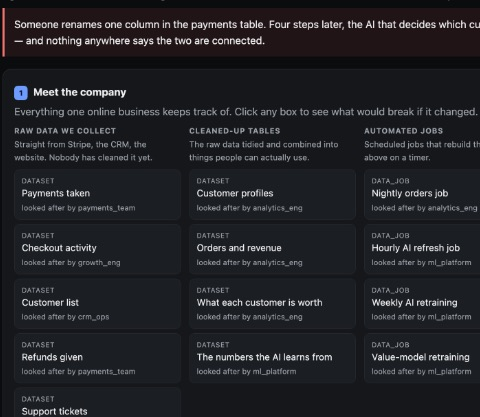

01 · The full stack
INTERFACE to INFRASTRUCTURE
Clock-in cut from 2 s to 180 ms, page load from 6 s to 0.8 s as a catalog grew 60×, and checkout kept correct under 100+ concurrent requests.
Software & AI Engineer
Los Angeles
Open to SDE roles

I’m Huzaif, a software and AI engineer in Los Angeles and a domain expert in private, fast, production-ready AI. Across 4+ years of industry and research I’ve kept sensitive data on the device with 10.5× faster PII detection, given agents a memory that cuts repeat work by 51%, and helped run an enterprise app serving 1.2M requests a day with zero downtime.
Protecting sensitive information before it reaches a cloud AI model. On-device PII detection, 10.5× faster, with LLM-generated patterns cached at a 0.78 hit rate.
+49% F1 vs. PresidioAgents that investigate data dependencies and remember what they learn, trimming repeat analysis tokens by 51%.
40% fewer entities inspectedFinding structure in unstructured pathology reports across 32 cancer types, from TF-IDF and SVM to BioBERT.
94.5% held-out accuracy01 · The full stack
Clock-in cut from 2 s to 180 ms, page load from 6 s to 0.8 s as a catalog grew 60×, and checkout kept correct under 100+ concurrent requests.
02 · Intelligence
Multi-agent pipelines streamed into live VR classrooms in ~350 ms, PII detection on the device itself, and federated learning that stays encrypted with 46% lower latency.
Software engineer. AI researcher. Published at IEEE.
I’ve always loved coding. It started with building algorithms and grew into prompt engineering, robotics and research. Today I work across the whole application: the interface people use, the intelligence behind it, and the infrastructure that keeps it fast.
Off the clock I’m running, hiking, playing soccer, gaming, at the piano or behind a camera.
“SPEED IS A FEATURE people feel.”
The same habit runs through enterprise apps, on-device AI and real-time VR: find the slow path, then cache, batch or stream it.
Each bar compares a before and after measurement for that system. Bars are scaled per row.